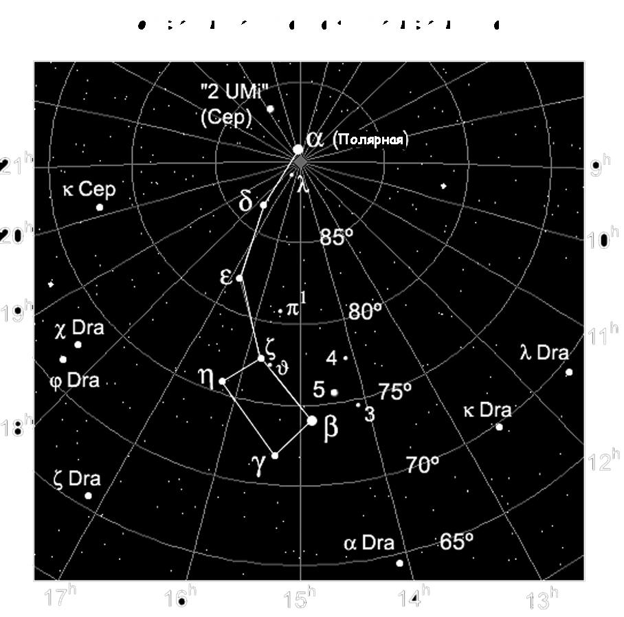

|  |
Местонахождение созвездия Малая МедведицаОтыскать на небосводе созвездие достаточно просто. Его соседями являются Жираф, Дракон и Цефей. Но ориентиром для поиска обычно служит Большая Медведица. Проведя взором линию через два крайних светила ее ковша, и отмерив вверх пять расстояний между ними, можно обнаружить Полярную звезду, которая служит началом «ручки» другого, меньшего по размерам «черпачка». Это и будет Малая Медведица. Она менее яркая, чем Большая, но все равно четко выражена на небосводе и легко отличима от других созвездий. В Северном полушарии это созвездие доступно для наблюдения круглогодично. |